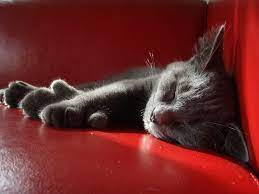
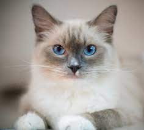
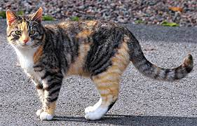

Katter
Kattens ursprung
I en ny studie kan vi se att dagens tamkatter kom från Egypten och Mellanöstern. Dom har antagligen spridit sig
genom handelsvägar och liknande, till både land och sjöss. Denna spridning påbörjades för 5000 till 10000 år
sedan. Det tycks som att katterna levde parallellt med människan under tusentals år, innan de faktiskt blev
domesticerade. De första katterna avlades troligtvis för att kontrollera skadedjur som möss och råttor, snarare
än sällskapsdjur. Åren gick och katterna blev mer bekväma med människor och människor blev mer förtjusta i dessa
små varelser.
Idag är katten det populäraste och vanligaste husdjuret i världen. I dagens Sverige och Europa så finns det
fler katter än hundar.
Kattraser

Skeppskatt
- Skeppskatter har 18 tår
- 5 på varje framtass
- 4 på varje baktass
- Skeppskatten är egentligen en missbildad katt, men betrkaktas nu mera som en egen ras och är väldigt
populär och eftertraktad.
- På grund av kattens missbildning så är det förbjudet att delta i en utställning.

Ragdoll
- Rasen ragdoll härstammar från USA
- Rasen ragdoll har blivit en av dom popluäraste innekatterna då dom är väldigt lugna och enkla.
- Kattrasen utvecklas väldigt långtsamt så det tar flera år innan katten har nått full fysik.

Bondkatt
- Huskatt, blandraskatt eller bondkatt är namnen som används på katter utan stamtavla.
- En huskatt är oftast korthårig och brunspräcklig.
- Bondkatten är den vanligaste katten i Sverige